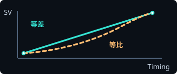
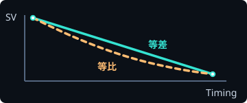
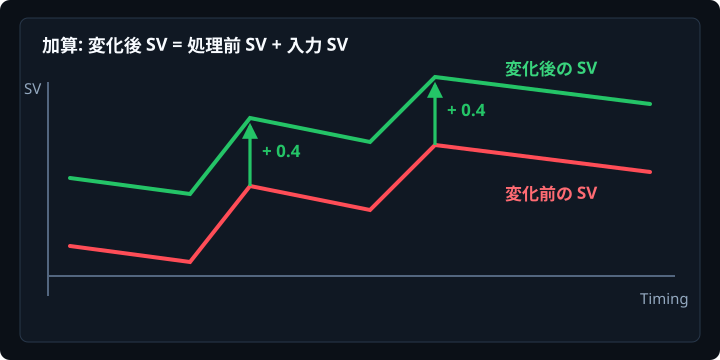
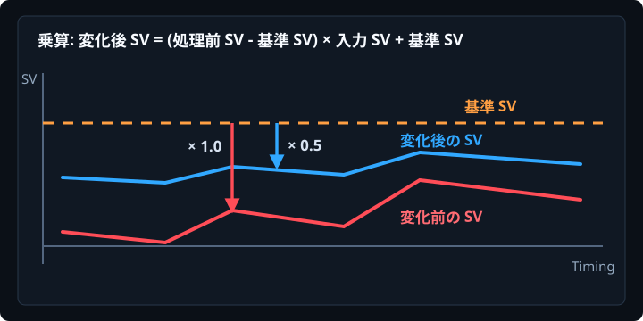
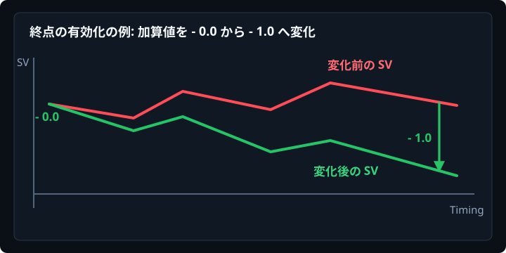
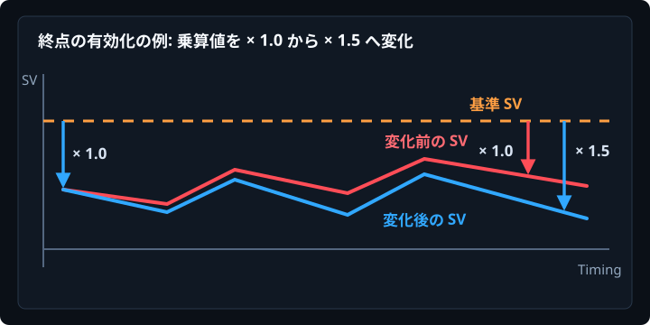

リアルタイムに譜面を読む
起動中の osu! プロセスから、現在開いている曲フォルダ、.osu ファイル名、再生位置、メタデータ、背景画像の情報を取得します。ツール側で譜面名が表示されれば、処理対象を認識できています。
User Guide
Overview
osu! のエディタで開いている taiko 譜面を読み取り、SV 編集や一括編集を補助します。操作対象は現在 osu! 側で選択されている .osu ファイル、または同じ曲フォルダ内の全難易度です。
起動中の osu! プロセスから、現在開いている曲フォルダ、.osu ファイル名、再生位置、メタデータ、背景画像の情報を取得します。ツール側で譜面名が表示されれば、処理対象を認識できています。
SV Editor、Utility、BG Setter は .osu ファイルを書き換えます。処理後は osu! のエディタで Ctrl + L を押して、ファイルを再読み込みしてください。
SV の適用・削除、ヒットサウンドの統一、ノーツ座標変更、タグ編集、設定コピー、再スナップ、背景 Y 座標調整、バックアップ保持数の管理を扱います。
Timing Property では、osu! の現在位置に対応する Timing、BPM、SV、Volume、見た目 BPM を確認できます。SV 作業中の値確認に使います。
このツールの基本は「osu! で対象譜面を開く」「ツールで条件を入力する」「実行する」「osu! で Ctrl + L を押す」です。成功メッセージだけでは osu! 側の表示は更新されないため、再読み込みまでを1セットにしてください。
Start
ビルド、起動、タイミング指定、実行後の確認までの共通手順です。
配布されている実行ファイルがある場合は、基本的に osu!taiko Mapping Helper.exe を実行すれば起動できます。
osu! を起動し、エディタで対象の taiko 譜面を開いておくと、ツールが現在の譜面を読み取れます。
ソースから動かす場合だけ、Visual Studio で osu!taiko Mapping Helper.sln を開いてビルドします。
開発者向けのコマンドライン例は次の通りです。
dotnet restore
dotnet build -c ReleaseSV Editor
上から順番に、Timing、SV、Volume、対象、実行までを説明します。
処理する範囲の始点と終点を指定します。
入力は mm:ss:fff 形式、またはミリ秒の整数に対応しています。たとえば 01:23:456 と 83456 はどちらも受け付けます。
Set Start Timing と Set End Timing は、osu! の現在の再生位置をそれぞれ始点・終点に入れるボタンです。
⇔ ボタンは始点と終点を入れ替えます。始点が終点より後ろにある状態では実行時にエラーになります。
SV チェックを有効にすると、追加または更新する緑線の SV を指定できます。
SV は 0 より大きい数値を入力します。小数も使用できます。
SV チェックを外した場合は、処理地点の直前にある緑線の SV を参照して、SV 値を明示的には変更しません。
等差モード は始点から終点まで一定量ずつ変化します。
等比モード は比率で変化します。
SV(t) = SV_start + (SV_end - SV_start) * p
SV(t) = SV_start * (SV_end / SV_start) ^ p
p は範囲内の進行率です。始点では 0、終点では 1 になります。


Volume チェックを有効にすると、緑線の音量を指定できます。
Volume は 5 から 100 の整数で入力します。小数は受け付けません。
Volume チェックを外した場合は、処理地点の直前にある赤線 or 緑線 の Volume を参照します。音量を変えずに SV だけを編集したい場合は、Volume を無効にして下さい。
無効にすると、始点ちょうどの対象は処理から除外されます。
無効にすると、終点ちょうどの対象は処理から除外されます。
設定のアドバンスモードを有効にすると表示されます。
通常は入力した SV をそのまま使いますが、相対速度変化では処理前の SV を参照して、新しい SV を計算します。
乗算 は (現在の SV - 基準 SV) * 入力 SV + 基準 SV の形で変化します。
加算 は現在の SV に入力 SV を足します。


終点の有効化 を併用すると、相対変化の始点値と終点値を別々に指定できます。


指定範囲内の対象タイミングに緑線を追加します。
SV や Volume を有効にしている場合は、始点から終点までの位置に応じて値を計算します。
既存の緑線と重なる場合は、処理対象やオフセットに応じて既存緑線を整理しながら出力します。
整理の内容として、対象ノーツの直前から対象ノーツまでの間にある既存緑線は、今回置く線と効果が重複しないよう削除対象になることがあります。 ただし、選択していないオブジェクトの SV を戻すために必要な線や、kiai の切り替わりを維持するために必要な線は残す・値を引き継ぐように扱われます。
適用後は、範囲内や範囲後のスライダーの見た目が崩れにくいように、必要に応じて sliderLength を補正します。
kiai 状態は、直前の赤線 or 緑線を引き継ぎます。
指定範囲内の緑線を削除します。赤線は削除しません。
削除後は、範囲内や範囲後のスライダーの見た目が崩れにくいように、必要に応じて sliderLength を補正します。
チェックすると、Objects のみで緑線を置くときに、対象ノーツの少し前へ緑線をずらします。
設定画面のオフセットタイプが
1/16 (1/12) offset の場合は、BPM から 1/16 分の時間を計算して前に置きます。
ms offset の場合は、指定したミリ秒分前に置きます。
1/12 を含める を有効にすると、1/12 snap の HitObject が含まれる場合に、前の HitObject の方へ SV 線が近づきすぎないように 1/12 分のオフセットを使います。それ以外の配置では 1/16 が使われます。
Volume 変化を伴う SV 線を設置する場合は、プレイヤーが早入りして叩くことにより Volume 変化が適用されなくなる場合を防ぐためにこの機能を使うことを推奨します。
実行 を押すと、現在の入力値と処理対象をもとに .osu ファイルを上書きします。
実行前にバックアップが作成され、成功するとメッセージが表示されます。最後に osu! 側で Ctrl + L を押して再読み込みしてください。
Utility
Utility は、SV 以外の譜面編集をまとめて行う場所です。
赤線ごとに BPM、拍子、barLength からスナップ間隔を計算します。
各スナップ位置の前後半分の範囲に入っているノーツを、そのスナップ位置へ移動します。範囲内に赤線がある場合、次の赤線以降は新しい BPM と拍子で再計算します。
選べる間隔は 1/24、1/36、1/48、1/60 です。譜面の意図に合う最小単位を選んでください。実行前に確認ダイアログが表示されます。
BG Setter
現在の譜面背景を表示し、osu! の背景イベント行に保存されている Y 座標を調整します。
Events セクションの背景行にある Y オフセットを書き換えます。画像ファイルそのものを編集する機能ではありません。背景の表示位置だけを変えたいときに使います。
Timing Property
Timing Property は、編集対象を書き換える画面ではなく、osu! の現在再生位置に対応する値を確認するための補助画面です。設定のアドバンスモードを有効にしている場合にメニューへ表示されます。
mm:ss:fff 形式で表示します。osu! エディタで曲を再生またはシークすると、Timing Property の値も更新されます。
SV Editor で複雑なカーブを作る前に、現在の BPM や SV を確認しておくと、入力する SV 値を決めやすくなります。
Settings
ツール全体の表示、バックアップ保持数、オフセット方式、ノーツ座標を管理します。
Safety
このツールは便利ですが、実行時に .osu ファイルを書き換えます。処理の前後で何が起きるかを理解しておくと安心です。
SV Editor、Utility の一部、BG Setter は、上書き前に Backup フォルダへ現在の .osu ファイルをコピーします。
バックアップファイル名には日時が使われ、設定した保持上限を超えた古いファイルは削除されます。
大きな範囲への SV 適用、全難易度へのコピー、Resnap などは影響範囲が広い処理です。
公開前の譜面や作業中のセットでは、曲フォルダごと別の場所へコピーしてから試すと安全です。
成功メッセージは「ファイルへの書き出しが終わった」ことを示します。osu! エディタの表示は自動では更新されません。
必ず Ctrl + L で再読み込みし、Timing、HitObjects、背景座標を確認してください。
Troubleshooting
よくある症状と確認する場所です。
osu! が起動しているか、エディタで譜面を開いているか確認してください。
曲フォルダや .osu ファイルが移動・削除されている場合も取得に失敗します。
osu! 側で Ctrl + L を押して譜面を再読み込みしてください。
ツールがファイルを書き換えても、エディタの表示は自動更新されません。
mm:ss:fff 形式、またはミリ秒の整数で入力してください。
始点が終点より後ろの場合もエラーになります。
SV は正の数、Volume は 5 から 100 の整数が基本です。
相対速度変化の基準 SV も正の値を指定してください。
設定画面のバックアップ保持上限を変更して保存します。
1から100の範囲で指定でき、保存後に古いバックアップが整理されます。
ツール上で不具合が発生した場合は、Discord の bug-report へ報告をお願いいたします。
ツールに追加してほしい機能や改善案がある場合は、Discord の request へ投稿をお願いいたします。
Project Members
osu!taiko Mapping Helper の開発、機能提案、説明書作成、校閲、テストに関わった方々です。